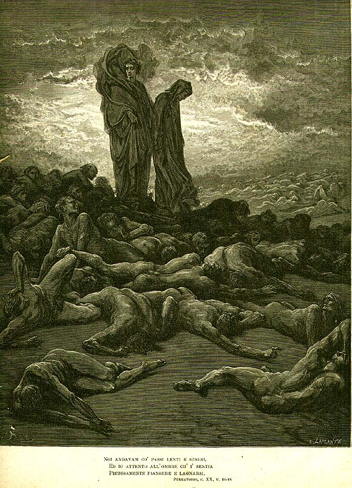

Песнь 20 из 33
Скупость: гимн бедности. Дрожь горы

Кратко
Распростёртые души взывают к образцам святой бедности и щедрости (Мария в нищем хлеву, бессребреник Фабриций, святой Николай). Гуго Капет, родоначальник французской династии, обличает алчность своих венценосных потомков — «злое древо» Капетингов, — перечисляя их преступления, вплоть до надругательства над папой Бонифацием в Ананьи. Внезапно вся гора содрогается, и со всех сторон гремит «Gloria in excelsis Deo» — знак, что чья-то душа закончила очищение. Данте холодеет от страха и недоумения.
Главные моменты
- Образцы святой бедности — против корня скупости.
- Инвектива Гуго Капета против алчности французской короны.
- Ананьи: пленение Бонифация VIII — «новый Пилат и новый Христос поруганный».
- Землетрясение и всеобщий гимн — таинственный знак освобождения души.
Значение
Алчность как корень и личного греха, и политических преступлений; дрожь горы готовит явление Стация.